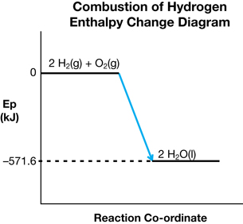
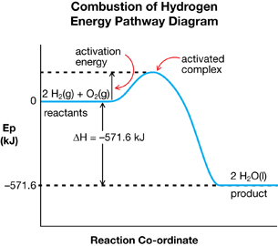

Module 2—Thinking Energy
 Self-Check Answers
Self-Check Answers
Contact your teacher if your answers vary significantly from the answers provided here.
SC 2.
Practice 2.
The hypothesis that reactions have an activation energy is suggested by experiments that show energy may be required to initiate a reaction, even if the reaction is self-sustaining once started. An example would be combustion of hydrogen. Also, the fact that similar reactions occur at different rates suggests that the reason for the difference in reaction rates may be differing activation energies. The reactions of alkali metals with water illustrate this. Furthermore, if there were no activation energies, then spontaneous reactions would all occur almost instantaneously. In addition, experiments demonstrating the effect of catalysts are readily explained by hypothesizing the existence of an activation energy.
Practice 3.
- The reaction is endothermic.
- (i) represents the activation energy of the forward reaction and (ii) represents the enthalpy change for the reaction.
- As the reactant molecules approach each other, their combined kinetic energy is at a maximum and the relative potential energy is at a minimum. As they collide and “climb” the energy barrier, kinetic energy is converted to potential energy. Provided they have enough kinetic energy in the first place, they will surmount the barrier. At the top of the energy profile, the potential energy of the system will be at a maximum and the kinetic energy will be at a minimum. At the end of the reaction the system will have less kinetic and more potential energy than it did originally.
Practice 4.
They differ in that the enthalpy change is the net difference in potential energy between reactants and products, whereas the activation energy is the height of the energy barrier that must be surmounted to achieve a successful collision. They are similar in that each is a difference in potential energy. In the case of the activation energy, it is the difference in potential energy between the reactants and the activated complex rather than between reactants and products.
Practice 5.
- There must be an adequate supply of oxygen to burn the hydrogen, and the reaction needs to be initiated by a spark or flame to overcome the activation energy.

- and d.

Practice 6.
Purpose
The purpose of this investigation is to test the hypothesis that the activation energy decreases from sodium to cesium.
Problem
What evidence is there that from sodium to cesium, there is a decrease in the activation energy for the reaction with water? The manipulating variable is the alkali metal used, and the responding variable is the observed reaction rate.
Hypothesis
For the reaction with water, the activation energy from sodium to cesium decreases. If the metal reacts more violently with water, then the reaction has a lower activation energy.
Design
Separate small samples of sodium, potassium, and cesium with equal masses will be dropped into water. Evidence of differences in reaction rate will be observed.
Prediction
Cesium will react the fastest and sodium the slowest, indicating that the activation energy decreases from sodium to cesium.
Materials
|
|
|
CAUTION
Wear eye protection, apron, and gloves throughout the procedure, and only combine the reactants behind a safety screen.
Procedure
Step 1: Measure 100 mL of water into a 250-mL beaker, and place the beaker behind a safety screen.
Step 2: Using the knife, cut a small piece of sodium (half the size of a small raisin) and remove it from the container in which it was being stored under oil. Place the piece on a paper towel to remove excess oil. Quickly measure the mass of the sodium, ensuring it is 0.50 g.
Step 3: Grasp the sodium with tweezers and dab it with paper towel to remove some oil.
Step 4: Quickly reach around the screen and drop the piece of sodium into the beaker of water.
Step 5: Record evidence for reaction with particular attention to the rate.
Step 6: Repeat Steps 1 to 5 for potassium and cesium.
Step 7: Dispose of the reaction mixtures down the drain.